Lohi Bher, 8 September
We spent one day at one school. We watched two lessons beside their lesson plans. We sat in the staff room. After lunch we opened the scores. By four o'clock the team had decided what to change.
- The night before, the numbers said this school was a star. They also said fewer than half its teachers had ever used a plan.
- At 09:24 the principal said the plans leave no room for a teacher's own ideas.
- At 10:20 Raheela taught five new words. The best moment of the lesson was not in the plan.
- At 10:55 Saima followed her plan step by step. The children spoke five words in every hundred.
- At 12:08 the staff room told us the score punishes a better idea. Nobody could prove it either way.
- After lunch we opened the four scored records. What we found is the heart of this report.
- At 15:15 we sat with the regional team and turned it into eight moves, each with a number to check.
Every chapter opens short. Tap Open inside a chapter for the minute-by-minute detail and the audio. Hover or tap any code like B6 to see what it means. Leave a sticky note at the end.
What the database already knew
Before we set foot in the school, one query told us who to sit with and what to ask. It also gave us a guess to test.
Playbook Step 0, trigger · Layer 1, product analytics review · Layer 2, a written hypothesis
The school makes a lot of plans. 276 lesson plans in six weeks. A typical school in this sector makes about 74.
But most teachers never start. Only 13 of 29 teachers made any plan. Three of them made 60 percent of the total. One teacher, Samina, made 102 alone.
And every plan was for grades 1 to 5. In a school where 21 of 29 teachers teach grades 6 to 12. The new grade 6 to 12 plans had gone live 30 hours earlier. Nobody here had touched them.
Our written guess going in: the primary plans are used by a few keen teachers, and the plan itself is too long for one period. The staff room would have to confirm or overturn that.
Open the rest of the numberssix more charts, and the plan we walked in with
The plan we walked in with
We named three teachers to sit with. Samina, because 102 plans and a very low fidelity score on her one observation cannot both be the whole story. Naheed, the only active teacher who had never recorded a lesson, and exactly who the new grade 6 to 12 science plans were built for. And one teacher who had never started, because fifteen minutes with a non-starter teaches more than a fourth chat with a fan.
The day picked its own teachers, as days do. We saw Raheela and Saima.
The numbers said "star school, few users". The principal was about to tell us why.
The principal, in three sentences
They have taught every grade from one to twelve and read the lesson plans themselves. Three things they said set up the whole day.
Playbook Layer 3, interview · the school-leadership view · root cause to watch: leadership pressure
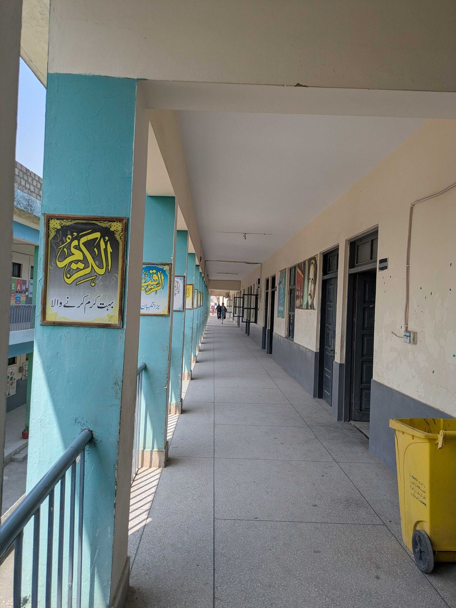
"The teacher's room for creativity has shrunk. When the same thing repeats again and again, the teacher gets bored."The principal, on the lesson plans · 04:23
"If I know I'm being recorded, I'm not quite as natural."On the AI coach recordings · 05:23
The grade 5 exam is in February. The course has to finish by December.
"The whole book comes in the exam." So grade 5 teachers race to finish by December and then revise. The Directorate sends its own model papers and its own learning goals. A second set of papers is promised. Our plans are a third pattern. "A teacher doesn't have one thing to follow. She has to build the paper two or three ways."
Asked what would help most: "Give them sample tests."
Then the bell went, and we walked into a Grade 3 English class with two phones recording.
Five new words, and the nine minutes that vanished
Raheela Safdar taught five new words to sixty-plus children, and taught them well. The plan's nine minutes of writing never came, and a game nobody planned was the best part of the morning.
Playbook Layer 3 · Teacher interview · Track B, delivery. Layer 2 hypothesis "the plan is too long for one period" confirmed in the room.
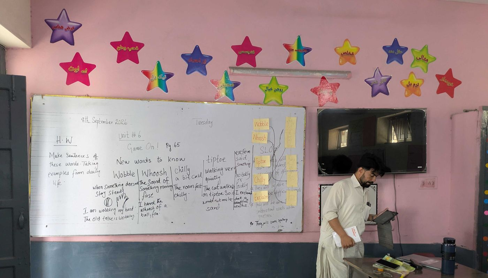
Two phones recorded the lesson, Haroon's and Moiz's. Raheela pulled the plan the night before, at 21:49.
She opened with a whisper game, then the plan's question: when something is hard, do you give up? She taught wobble beautifully. She wobbled her hand, then a table. Then she taught the other four words the same slow way, hearing every raised hand.
By minute twenty the children should have been writing alone. They were still on the second word. At minute 27 she called children to the front for a game. At 32:06 she said "that's it". No child wrote a new sentence.
In the debrief Raheela gave the reason. With sixty-plus children she does the writing in a second period. Today there was none.
Open the full lesson, minute by minutethe plan beside the room, with the audio
The plan has eight steps, called moves, m1 to m8. A move is a step the plan asks for. Green is on plan, amber ran long, red is missing, gold is not in the plan.
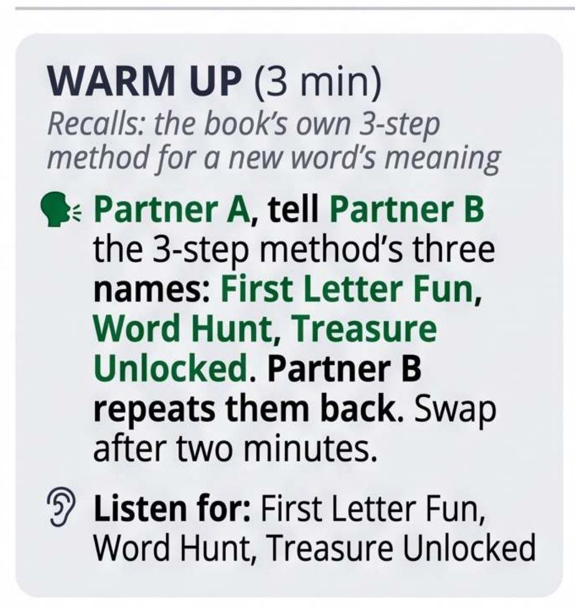
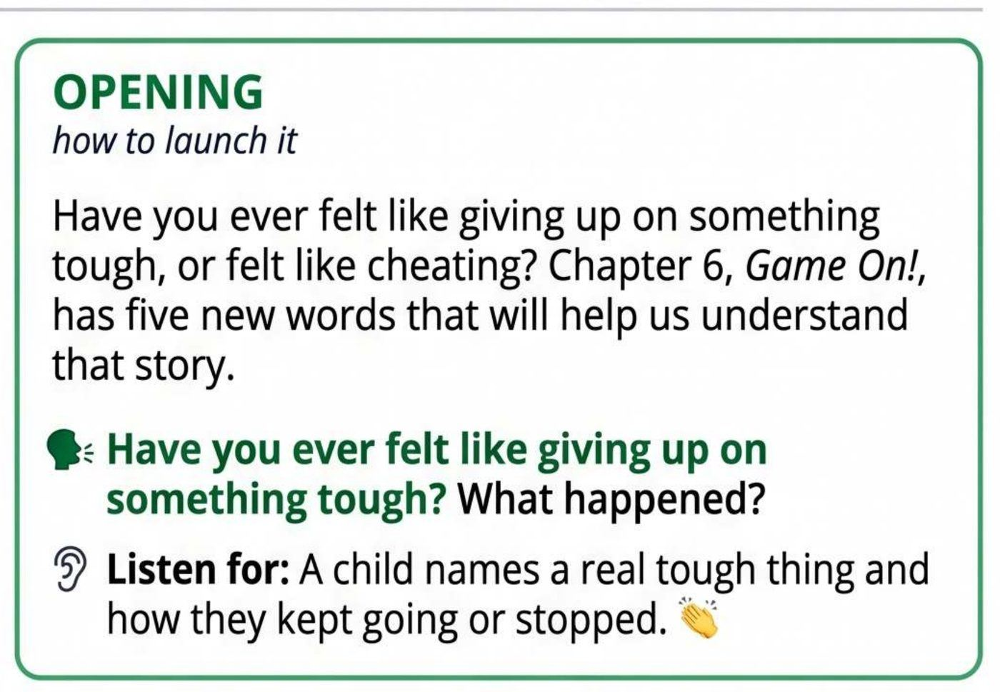
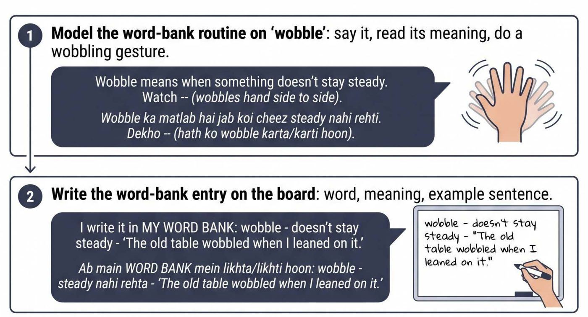
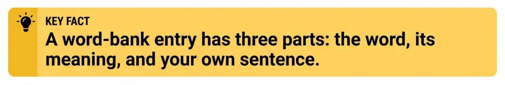
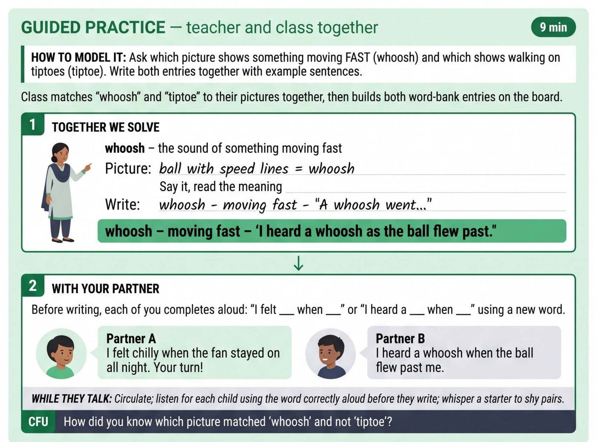
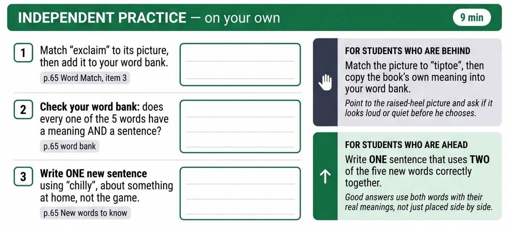
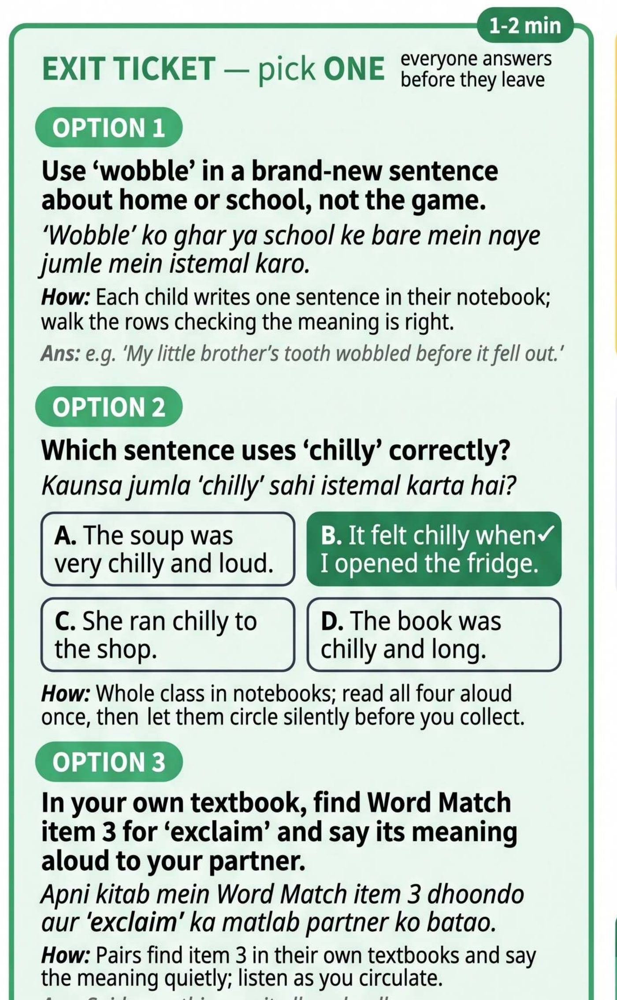
A warm-up before the warm-up not in plan
"Who is physically and mentally active?" Children jump at their desks.
Partners, then a different game m1 swapped
Partners formed as written. Then a whisper chain down the rows: "fun", then "say your underdog". Not the book's method the plan wanted.
The hook, as written m2 done
"Open page 65." Ever found something hard? Give up, or keep going? Children answer. Then a full minute on cheating.
Wobble, taught beautifully m4 mostly
Children read it, spell it, guess the meaning. She wobbles her hand, then a table. Missing: she never said "an entry has three parts", and never asked a child to name them.
The other four words, the same way +5:50
The plan models one word. She modelled all five. Badminton for whoosh, a thief for tiptoe, birthdays for exclaim. Good teaching, and it cost the writing at the end.
Sentences for all five words, whole class m5 partly
The plan's two sentence frames appear word for word. She said them, the class repeated. No pairs, no pictures.
"Now the activity" not in plan
Children at the front match the sticky-note cards, word by word. The child holding chilly shivers. She notices.
چلی۔ او، ویری گڈ۔ یہ شیور کر رہا ہے۔ یہ ایسے نہیں کہ کھڑا ہوا، یہ شیور کر رہا ہےChilly. Oh, very good. This one is shivering. Not just standing there, shivering.
Act and guess the moment
A child acts, the class guesses. A shiver: chilly. "Go back. Very good. Next." A second child acts: exclaim. Haroon saw tiptoe walked too. On audio, walking is silent.
"That's it." m6 not done
No child wrote a new sentence. No one checked a word bank. Homework: make sentences at home, explain them to your family.
اب ہم کام اوپر کے۔ بس ختم۔ ان ورڈز کے آپ نے ڈیلی لائف کے سینٹینسز بنانے ہیںNow we wrap up. That's it. Make daily-life sentences with these words.
No exit ticket m7 not done
Nothing written, nothing collected. The game was three children, not everyone.
13 out of 40 on Haroon's phone. 10 on Moiz's. 26 after Moiz corrected it.
The machine scores fidelity, which means how closely the lesson followed its plan, as part of FICO, our teaching scorecard. It half-saw the game, called it "performance activities", and gave it no credit. Moiz flipped six of eight verdicts. His indicator scores, B1 to B10, did not move.
| Move | Haroon's phone | Moiz's phone | After Moiz | In the room |
|---|---|---|---|---|
| m1 warm-up | not done | not done | not done | a different game |
| m2 hook | done | not done* | better | done, ran long |
| m3 board | can't judge | can't judge | done | done, in the photo |
| m4 wobble | partly | partly | done | 4 of 6 parts |
| m5 guided | partly | not done | not done | partly, whole class |
| m6 alone | not done | partly† | partly | the game instead |
| m7 exit | not done | not done | better | not done |
| m8 homework | partly | not done | better | a vaguer one |
* Moiz's recording is missing 4:50, the whisper game and the whole hook. Nothing checks for a gap like that. † This "partly" mistakes the 32:06 homework for class work. A coach's flip changes the verdict, not the machine's written reasons. So m7 reads "better" beside "no identifiable exit check".
سو، لیٹس سپوز آپ کہتی کہ ایک ایک سے نہ پوچھتی، آپ سب کو کہتی کہ سارے ایک ایک لکھ لو، اور ان میں سے کچھ سے پھر آپ پروناؤنس کرواتی۔ سو دیٹ وڈ ہیو سیوڈ یور ٹائمMoiz, in the debrief: suppose you had not asked one by one. Suppose everyone wrote one, and you had a few say theirs aloud. That would have saved your time. His debrief was the truest account of the lesson anywhere in the system.
Next door, Saima followed the plan almost step by step, and still lost the children.
The plan was followed. The children did not speak.
Saima Sajida read "Heroes of History" with Grade 2 and taught WHO, WHERE and WHY, just as the plan asked. For every 100 words said in the room, children said about 5.
Playbook Layer 3 · Teacher interview · Track D, application · root cause: coaching feedback quality
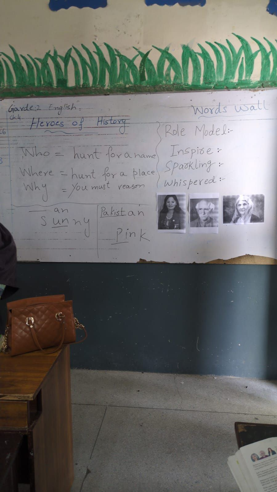
Saima was ready. She read the story aloud, taught WHO, WHERE and WHY, and found the -an words, as the plan said.
Then she asked for a Pakistani hero. Three names came, then a long quiet. She asked for a reason. The answer was "Miss". She waited ten seconds, then gave the names herself.
The practice problems were asked out loud, one child each. Nobody wrote. The exit question she asked, and answered, herself.
Her last words were to us: "there are a lot of problems here, with the little ones."
Open the full lesson, minute by minutethe plan beside the room, with the audio
Times are from Haroon's phone, which started 3:22 after Moiz's. A tag like m1 is a step the plan asks for.
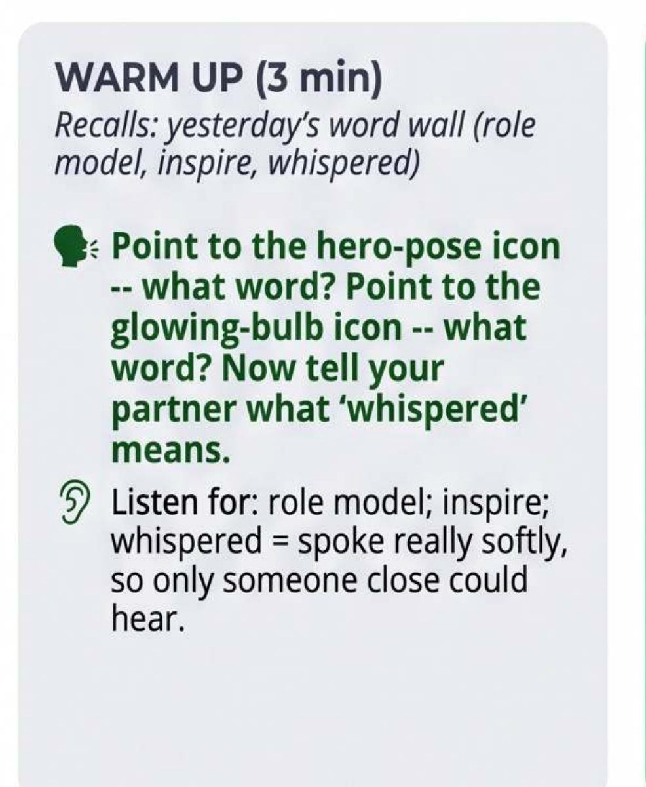
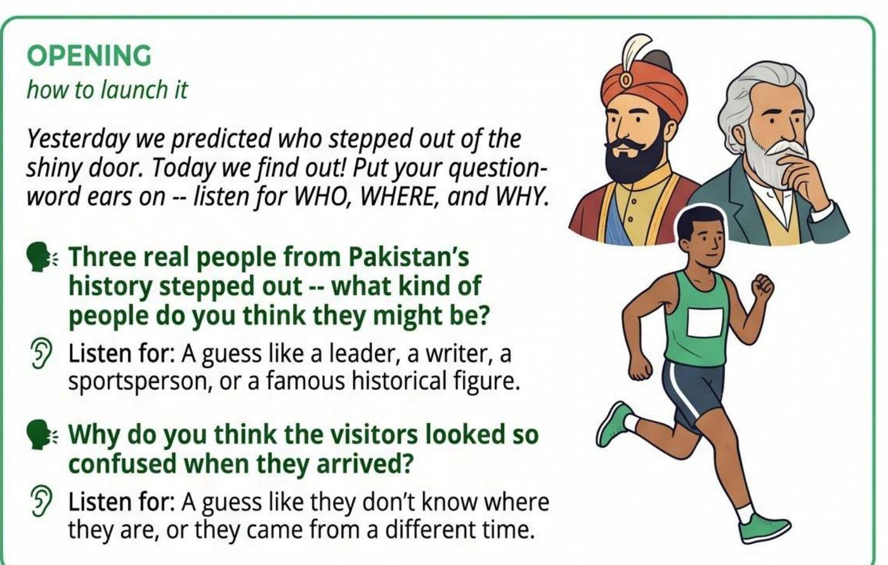
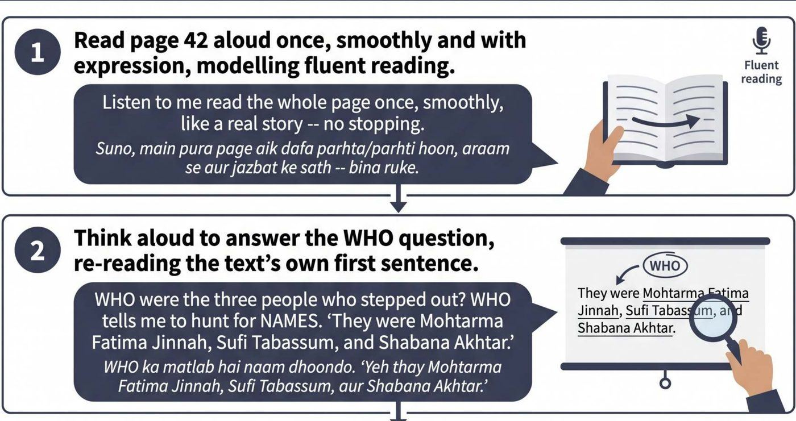
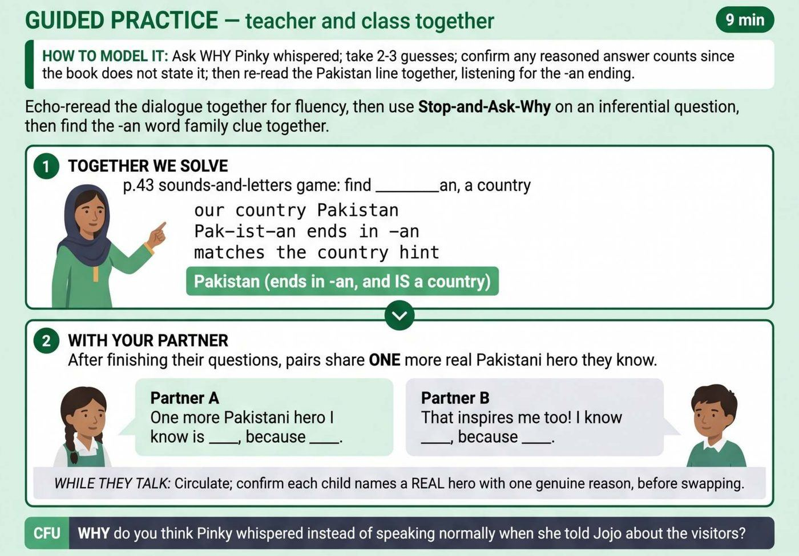
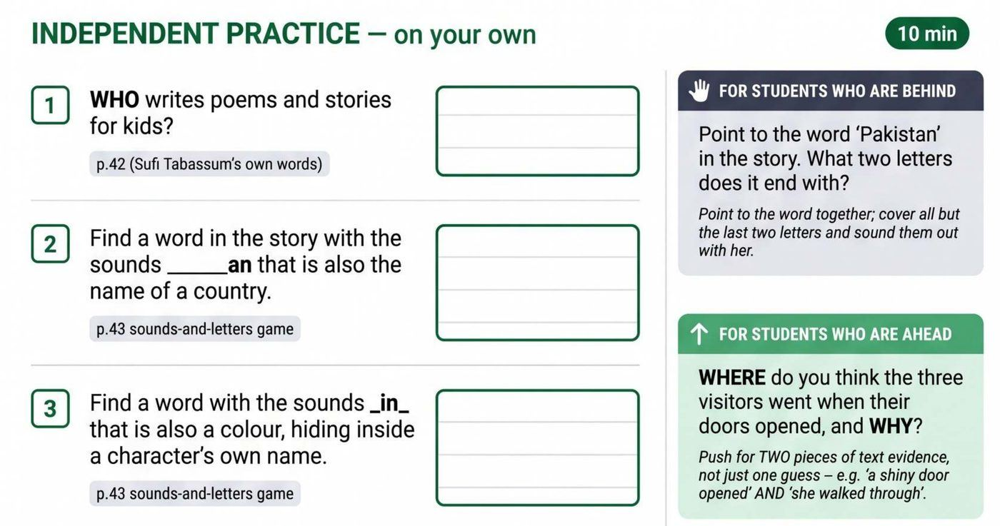
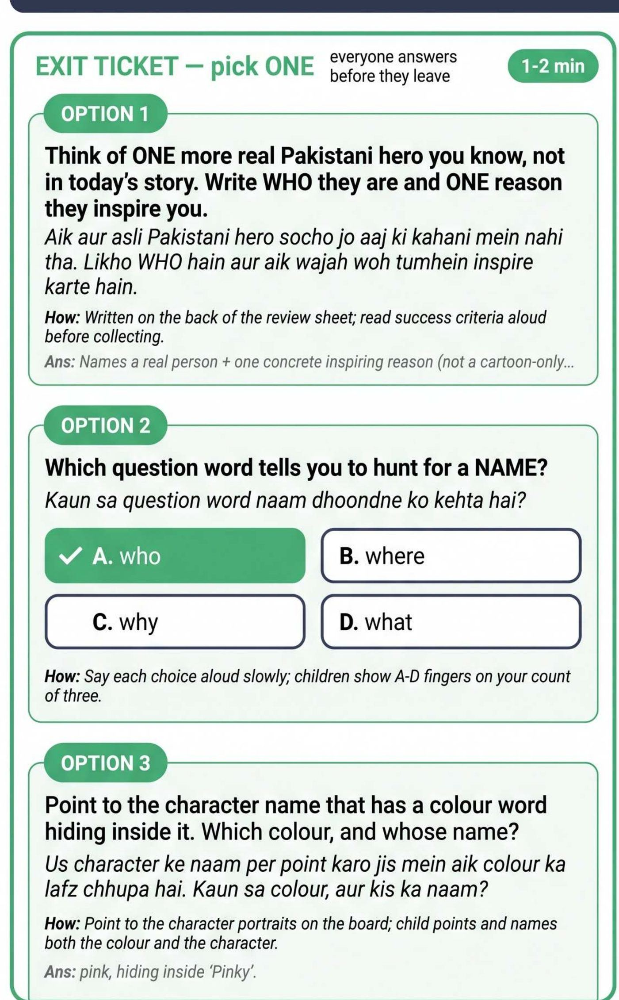
Warm-up, on Moiz's phone only m1 partly
Yesterday's heroes, the word wall, and what "whispered" means. The plan asks a partner to explain the word. Saima explained it herself.
"Page 41. First I read, you listen." m2 replaced
The plan's hook was a shiny door, three portraits and "why did they look confused?". Instead: three people from Pakistan's history are coming. WHO, WHERE and WHY came after the reading, not before.
The whole story, read once m4 done
Word for word, the plan's page 42 text. Saima said "page 41" six times, but the words she read are on pages 42 and 43. Both machine runs marked her down for that. It was a label, not a lesson.
The retelling, and the questions she answered herself +3:02
"What is a sunny day? When there is sun, no clouds." "Why did they look confused? Because…" Then a minute about litter in the playground. "Who was Fatima Jinnah?" A child: the Quaid's friend. "His sister. Mother of the Nation."
تین لوگ تھے جو کہ بہت کنفیوزڈ لگ رہے تھے۔ کیوں لگ رہے تھے؟ کیونکہ جب وہ آئے، انہوں نے دیکھا…Three people who looked very confused. Why? Because when they came, they saw…
"Think with your partner of a Pakistani hero" m7 partly · −4:25
Said as pair talk, run as hands up. Babar Azam, the Quaid, Allama Iqbal, one child each. Then forty seconds of "nobody thought of anyone?" No child gave a reason. The plan's "why did Pinky whisper?" was never asked.
The three problems, asked out loud m8 replaced
Who writes poems? Sufi Tabassum. The -an country? Pakistan. The colour hiding in a name? Four tries before "pink". Three children answered. Nobody wrote. No easier or harder version for anyone.
"Another real hero, and why" m9 not done
The answer was "Miss". Twice. Then ten seconds of silence. Saima gave Noor Jehan, Imran Khan and Edhi herself. The exit question, "which word tells you to hunt for a name?", she asked and answered: WHO.
میم نے کارٹون دیکھا۔ کھلاڑی بھی نہیں پتا۔ آپ کو بس کارٹونوں کے بارے میں پتہ ہےMiss watched a cartoon. You don't even know a player. You only know about cartoons.
Silent reading, then homework not in plan
The plan wanted the class to read aloud together. Saima asked for quiet reading. Homework: two lines about a role model. Then, to us: "There are a lot of problems here, with the little ones."
Open what the machine scoredand what the coach in the room corrected
"Steady participation," said the machine, of a class that said 5 words in 100
The machine caught the big misses: no independent work, no exit ticket. Then it scored participation 3 of 4 and wrote "steady participation". Moiz was in the room. He cut every engagement score from 3 to 2. The D scores measure how much children took part. C1 is how good the questions were.
| Score | Machine | Moiz |
|---|---|---|
| D1 taking part | 3 | 2 |
| D2 thinking hard | 3 | 2 |
| D4 confidence | 3 | 2 |
| D5 on task alone | 3 | 2 |
| D6 use of materials | 3 | 2 |
| C1 questions | 2 | 2 |
چھوٹے بچوں کے ساتھ ہم دو پیریڈ ہوتے ہیں۔ ایک میں ہم پڑھاتے ہیں، تو ایک میں ہم ان کو پریکٹس کرواتے ہیںSaima, after the lesson: with the little ones we run two periods. One to teach, one to practise.
Both coaches suggested slower transitions, one line of instruction before each switch. Nobody suggested waiting for a child to answer.
At noon, in the staff room, the teachers told us what they thought of all this, and it was not gentle.
Where the numbers stop and the teachers start
For 51 minutes the staff room told us what they think of the plans, the coach and the score. Not all of it is what we remembered.
Playbook Layer 3 · Teacher interview, all four tracks in one room, and Layer 4 root causes: content/curriculum fit, trust in the product, coaching feedback quality
It started with a grade 5 English teacher and a house. They had taught paragraph writing that morning: foundation, walls, details, page 83. The idea was fine. The plan's words did not match it, and the plan tired you out just to read.
Then the first hard number. One recording, sent twice, scored 30% and 53%. Haroon said one upload had picked up the lesson plan and the other had not. That is a real bug in our linking code.
The score frightened people. Match the plan, good marks. Miss it, not. And nobody had opened the plan being checked against.
Ten minutes, while we were out, were the staff's own talk. Those stay private, except one line about the plans, labelled below.
"Some of it is written here, some below, some above. Which one are we following?"A teacher, on the K-5 plan · 16:47
Four buckets inside: K-5 lesson plans · 6 to 12 lesson plans · AI coach · Fidelity scoring.
Open the four complaintsthe plans, the coach and the score, with the audio
K-5 lesson plans
Track B · content fit, trust in the product- Three plans, one page. The boxes for slower and faster children read as three plans at once.کچھ ادھر لکھا ہوا ہوتا ہے، کچھ نیچے، کچھ اوپر
- Who wrote this, really? Teachers said an AI that does not know their classrooms made it. Haroon said our team did.
- Nothing for three groups. One teacher already runs three levels, and the plan has nothing for them.
- The content feels foreign. A morning dance, "Pinky and Joseph" where Ali and Sana would do, superheroes instead of Fatima Jinnah.
- Two periods, not one. "It takes two full periods, try it yourself."
6 to 12 lesson plans
Track B · content fit- Notes, not a plan. Exam question banks sit after the plan, so the whole file reads as the plan.وہ یہ نوٹس ٹائپ ہے نا، یہ لیسن پلان نہیں ہے
- Three masters, no time. "We follow NIETE, the SLOs and FDE. There is no time left to teach." Haroon: lining them up is our job.
- Promised on the tape. A shorter plan on teachers' phones "next week", and the 6 to 12 plans cut down.
AI coach
Track C · coaching feedback quality- Fifteen became the rule. Teachers were told to send 15 minutes, so they send a slice, then ask how a slice can judge a lesson.
- Follow-up questions get dropped. After class the coach asks question after question while the teacher is in the next room. "I just stop."
- No sick days allowed. Daily pair reading counts against the score, even on a bad day.اس کو مسٹ کیوں کیا … کوئی ٹیچر بیمار نہیں ہو سکتی
- Stress with our name. A colleague refused to record, then sent a sorry voice message from home, and named the programme.
- Numbers are for you. "The numbers are for you and Moiz. We came here to teach children."
Fidelity scoring
Track D · coaching feedback quality, trust in the product- Own ideas earn nothing. Fidelity means how closely the lesson followed its plan, and teachers ask why an idea of their own gets nothing.
- The rubric says otherwise. Haroon: half a mark for partly done, a full mark for done, and a full mark for something better or equal.
- Hands and feet tied. Do your own activity, it is on the board, and the marks drop.ہمارے ہاتھ پاؤں بندھے ہوئے ہیں
- Add marks, don't cut. At the end Haroon and Moiz said the lesson they watched beat its plan. A teacher: then give extra marks, don't cut.
The exam, and what changed in the room38:14 to 51:24, with the audio
At 38 minutes the talk turned to the grade 5 paper. FDE, the office that runs Islamabad's government schools, used to send the exam format: which stories, which paragraphs, which applications. This year, nothing.
Haroon did not say the exam would come from our plans. He said FDE had read every chapter of the textbook and built the syllabus on it, and that the lesson goals, called SLOs, list the writing forms. Then he had them open a plan on their phones and walked its parts: words, reading, comprehension, a speech, an application. The old memorised letter is gone on purpose.
The room changed. "What is the format" became "how do I teach application" and "how will my fifteen weakest cope". Haroon coached it: parts first, in Urdu, aloud, then written. One teacher's yes was compliance, not conversion: "We followed FDE's format then. We follow what you make us follow now."
The room said the score punishes a better idea, nobody opened a scored lesson to check, so after lunch we did.
Same lesson, two phones, two different scores
The staff room said the score punishes a better idea, and nobody could settle it. So we opened the four records of the two lessons we had just watched, and found something more specific.
Playbook Layer 2 · Product deep-dive, the room's hypothesis tested against the records · Layer 4 root cause: product bug or UX friction, plus coaching feedback quality
Each lesson was recorded on two phones, Haroon's and Moiz's. So each lesson has two records, scored by the same machine. Fidelity means how closely the lesson followed its plan. It is scored out of 40. Here is what the four records showed.
- Two phones, two scores. Before any coach touched them, Raheela's lesson scored 13 on Haroon's phone and 10 on Moiz's. Saima's scored 25 and 20. Part of the gap is a hole of 4 minutes 50 seconds in Moiz's recording of Raheela, and nothing in the pipeline noticed it. The rest is the model reading the same lesson twice and reading it differently.
- The scorer cannot see the board. Both plans have a step that says "write it on the board". Both boards were done, and a photo of each board was attached to the record. On all four records the machine wrote that it could not judge that step, because writing makes no sound, and gave it nothing. Moiz then flipped it by hand on both of his records. A bug card, BUG-173, now names this.
- The verdict that never fires. The scoring has a verdict called "substituted better", for when a teacher does something different that works as well or better. Across all four records the machine used it zero times. Every "substituted better" in today's records was typed in by a coach afterwards. Raheela's act-and-guess game was counted as "not done".
- What it costs. Moiz flipped 6 of 8 verdicts on his record of Raheela. The coaches flipped 4 of 10 on each record of Saima. Correcting one observation properly took roughly 20 to 25 minutes per indicator touched. And when a coach flips a verdict, the machine's written reason stays. Raheela's record now says "substituted better" right next to "there is no identifiable exit check".
Hover over or tap any bar to see what that indicator means.
What every score word meansfidelity, moves, the five verdicts, and the ten B indicators
- Fidelity
- How closely the lesson followed its plan. Scored out of 40.
- A move
- One step the plan asks for, like "read the story aloud" or "give an exit check". Raheela's plan has 8 moves and Saima's has 10. Homework is listed but not counted.
- Done
- The teacher did the step as the plan asked. Full credit, 1.
- Partly
- Some of the step happened. Half credit, 0.5.
- Not done
- The step did not happen. No credit, 0.
- Substituted better
- The teacher did something different that worked as well or better. Full credit, 1. The machine is allowed to give this verdict. Today it never did.
- Can't judge
- The recording cannot show whether the step happened, like writing on a board in silence. The step is left out of the count. The machine calls this "not adjudicable".
- B1 Instructional clarity and objectives
- Did the teacher say what the lesson was for, and come back to it.
- B2 Lesson structure and sequence
- Did the lesson go "I do, we do, you do", in that order.
- B3 Activities and tasks alignment
- Did the activities match the learning goal.
- B4 Activation of prior knowledge
- Did the teacher connect to what the children already knew.
- B5 Real-world connections
- Did the lesson link to the children's own lives.
- B6 Differentiation
- Did children who were behind or ahead get a different task.
- B7 Use of the Taleemabad lesson plan
- Did the teacher use the plan at all.
- B8 Use of prescribed resources
- Did the teacher use the materials the plan lists.
- B9 Time on task
- How much of the lesson the children spent working.
- B10 Closure and consolidation
- Did the lesson end with a recap, or a check that the children got it.
- How the B score is worked out
- Each of B1 to B10 is scored 1 to 4, but the fidelity score out of 40 is not their sum. It is worked out from the moves. The machine adds up the move credits, divides by the number of moves it counted, and scales that to 40. So Raheela's B1 to B10 on Haroon's phone add up to 29, and her fidelity score is 13. When Moiz corrected his record of Raheela, he did not change a single B indicator, and her fidelity score went from 10 to 26.
The four records, side by sidemachine score, coach score, flips, and length of audio
| Record | Machine fidelity, out of 40 | After coach | Verdicts flipped by coach | Audio length | Note |
|---|---|---|---|---|---|
| Raheela, Haroon's phone | 13 | 13, not yet reviewed | none yet | 33:18 | The full lesson. The machine gave the act-and-guess game nothing, and said why. |
| Raheela, Moiz's phone | 10 | 26 | 6 of 8 | 28:29 | Missing 4 minutes 50 seconds in the middle, including the hook. Nothing flagged it. B1 to B10 were not changed. |
| Saima, Haroon's phone | 25 | 24 | 4 of 10 | 25:07 | Started 3 minutes 22 seconds late, after the warm-up. The transcript ran the last 22 minutes as one teacher turn. |
| Saima, Moiz's phone | 20 | 24 | 4 of 10 | 28:30 | The full lesson. Moiz also changed 14 other indicators, and lowered every engagement indicator from 3 to 2. |
Machine scores are the record's own autofill fields, before any edit. "After coach" is the saved score. Flips come from the record's edit summary. Audio length is the duration stored on the record.
Then some good news arrived, from a feature nobody had announced.
The same afternoon, we decided what to do
A visit that ends in a report is only half done. Like our daily data posts, an investigation has to end in actions, each with a guess about what will change and a number to check. So we met the regional team three hours after the staff room emptied, while it was fresh.
Playbook Layer 4, synthesis · one root cause per item, one owner, a date
Shorter lesson plans
- Decided, nobody against. Bigger font, fewer pages, and the cleaner grade 6 to 12 layout for grades 1 to 5 too. Haroon showed that a readable font turns today's plan into 16 to 20 pages. The room agreed it is too long.
- Data first. Sabeen checks the fidelity data to see which parts teachers skip or replace, by Wednesday. Then Sabeen and Ramisha write a condensed sample this week, with updated plans next week.
- Already on the board. Card TASK-163, filed 20 August: teachers find the new format hard to read.
- The survey says the same. 1,224 ICT teachers on 4 September: NPS of minus 40.
Fidelity scoring
- The scale. The scoring is moving from 0, half and 1 to just 0 or 1. The team was not sure why. Haroon asked Amena and Rifat to get the reasoning from Ali this week, so everyone works from the same answer.
- The loophole closes. Teachers had learned that not attaching a plan gives a kinder score. That path closes. Amena and Rifat design what replaces it.
- Filed today. Bug BUG-173: the scorer marks down what the microphone could not hear. Two of our four records are textbook cases.
A smaller FICO
- The problem. Almost every Islamabad teacher scores between 55 and 70 percent. Nobody ever gets a 4. "Even the best teacher in the world cannot get above 70."
- The decision. Ship a trimmed set of indicators as FICO v5 this week, even if imperfect. Amena, Rifat and Abdul Waheed own it. Nine of the 37 indicators never change from teacher to teacher.
- The hidden cost. Correcting one observation properly takes about 20 to 25 minutes per indicator touched. Three records were corrected today.
Why the quiz matters
Every teacher in the staff room said they record lessons because they were told to, and that the score scares them. A quiz their own children can take, made from that same recording, is the first thing that makes recording worth something to the teacher other than a mark.
The numbers are two days old and small. But 118 teachers have already reached a child through it, and nobody told them to. Haroon owns it for now. Hasnat collects teacher feedback this week.
Decisions are promises. The next chapter turns them into numbers we can check in four weeks.
Eight moves, each with a number
A recommendation without a number is a wish. Each move below says what changes, who owns it, our guess about why it will help, and the figure we will read in four weeks.
1 · One screen per step: a shorter, straight-line plan
Teachers zoom into one box on the phone and lose the rest. Today's plan is four dense pages for a 30-minute lesson. Keep the plan, cut the words: one screen per step. Sabeen and Ramisha · sample this week, plans next week.
Our guess: if the plan fits on the phone, the last step stops being the one that gets dropped.
2 · A scorer that credits a better idea, and can read the board photo
The score already has a "substituted better" verdict. The machine never gives it. It also marked "write the words on the board" as "can't judge" while the photo of that board sat in the same record. Amena and Rifat · this week · BUG-173.
Our guess: if the machine credits a good substitute and reads the photo, coaches stop rewriting its verdicts and teachers stop fearing it.
3 · A smaller FICO with an honest top
37 indicators, a scale nobody reaches the top of, and a correction that costs a coach an afternoon. Ship the smaller set, drop the nine that never change, and rescale so a good lesson can score well. Amena, Rifat, Abdul Waheed · this week.
Our guess: fewer indicators means faster, more honest corrections, and a score teachers believe.
4 · Make the recording earn something: the quiz
Offer the quiz after every completed AI-coach recording, and say so in the plan's coaching corner. Later, worksheets and revision sheets from the same recording. Haroon for now · Hasnat on teacher feedback this week.
Our guess: when a recording gives the teacher something for their children, they record more and fear it less.
5 · Teach to the exam they are afraid of
When the staff room heard that the grade 5 paper would be built from these plans and their goals, the mood turned. The principal asked for sample tests. Ask the Directorate what the February paper is. Until they answer, send grade 5 teachers a sample paper per chapter, built from the plans they already have. Bilal with the Directorate · meeting Friday 11 September.
Our guess: a plan that visibly prepares children for the exam gets taught, not just rated useful.
6 · Two phones, two scores: measure it
Same room, same 30 minutes, two recordings, two different scores. Our reliability work so far re-scores the same transcript. It has never changed the microphone. Evals · Sameer.
Our guess: a good part of the "unfair score" complaint is the recording, not the model.
7 · When a coach changes a verdict, the reason changes with it
Moiz set Raheela's exit check to "substituted better". The record still says "no exit check found". Whatever the teacher reads later must not argue with itself. Product · small, this sprint.
Our guess: a record that agrees with itself is a record a teacher can trust.
8 · A one-page brief for the coach before every visit
The coach forwarded our pre-visit brief to himself and asked for one every time. Ours was too long. The one-pager in the appendix is the shape. Built into the school-visits playbook · ready now.
Our guess: a coach who knows who to sit with does more observations per visit.
You have read what we saw. Now tell us what you see.
Leave a sticky note
Agree, disagree, add what we missed, or just say hi. Notes show for everyone who opens this page. Put your name on it, or it will not post.
Loading notes…
How this was made, and the coach's one-pager
Where every number came fromdata, field recordings, and the playbook
Data. Every number here came from the team's governed data connection to the NIETE database, pulled on 7 and 8 September. The plan steps came from the fidelity moves table. The plans and their voice notes came from the lesson-plan cache. The four observation records, with the machine's scores before and after the coach's edits, came from the coaching sessions table.
Field. Two phone recordings in each classroom, one in the principal's office, one in the staff room, written out by the same speech engine the product uses. Photos of the boards. No child can be identified on this page.
Afterwards. The 15:15 meeting from our meeting notes. The Notion cards through the board itself. The brief, the charts and this page come from the school-visits playbook, which any teammate can run the evening before a visit.
Contains teacher names and classroom audio. Internal to Taleemabad and NIETE. Please do not forward outside.
Where this visit sits in the playbook
Sabeena Abbasi's Teacher Low Usage Investigation Playbook: data first, product second, teacher last.
- Step 0, trigger. Fewer than half the teachers active, flagged by the data pull.
- Layer 1, analytics. The night-before charts: where in the funnel usage drops.
- Layer 2, deep-dive. The written guess: "the plan is too long for one period".
- Layer 3, interview. The principal, two classrooms, the staff room. Tracks B and D mostly.
- Layer 4, synthesis. The 15:15 meeting: root causes, owners, dates, numbers.
The coach's one-pagerwhat Moiz asked for: the half of the brief you read in the car
- Where. IMCG Lohi Bher, school 508, Sihala. Grades 1 to 12, 29 teacher accounts: 8 primary only, 15 middle or high only, 6 both.
- The one line. More plans than almost any ICT school. Fewer than half the teachers make them. Three people carry the number. Seven of eight primary-only teachers have never started.
- Sit with, in order. Samina (102 plans, a very low fidelity score on your last observation). Naheed (middle or high science, never recorded). One teacher who has never started.
- Check in the room. Middle or high teachers pulling primary plans. The grade 6 to 12 menu, live since Sunday. The call-centre account on the roster.
- From your last visits. Collaborative learning 43 against 52 for ICT. Differentiation 35 against 41. Look for any moment children work with each other.
- Before you go. Check the linked plan is today's, not the last one pulled. Charge the phone.